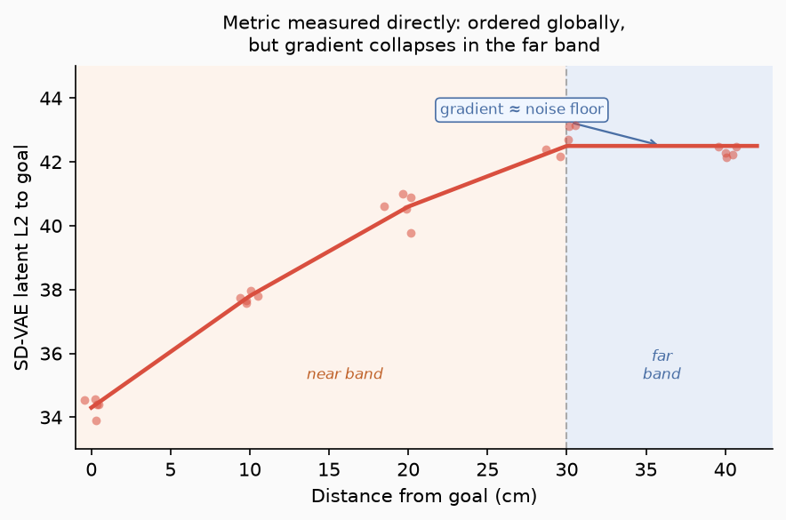

This post is the full build log, including all of the failures that led to success. These failures tell the full story: a world model that ignored its own actions, two confident wrong diagnoses I had to retract, a latent space that hallucinated, and a route planner that tried to drive the robot backwards. Key finding: the search was never broken — the objective was blind, and most of the work was proving that with a tape measure and then fixing it.
Background — why I built this
I've been fascinated by world model research lately. There are so many schools of thought, so many bets that researchers and companies are making on how these models can be used to solve robotics tasks. Dr. Fei-Fei Li describes the current landscape best, in her recent blog post "Functional Taxonomy of World Models" https://www.worldlabs.ai/blog/taxonomy-of-world-models. She splits them by what they output: a Renderer outputs pixels meant for human eyes, where visual fidelity is what matters; a Simulator outputs state — a geometrically and physically faithful representation that programs can compute on; and a Planner outputs actions — given observations and a goal, it decides what the agent should do next, closing the perception–action loop. She argues these eventually converge into unified models, with simulation as the linchpin.
This project lives squarely in the Planner corner of that taxonomy. It is not trying to render a beautiful world or to be a faithful physics engine. The decoded frames are frankly, blurry. It is trying to use a small, imperfect imagination as the inner loop of a controller: propose an action, imagine its consequence, score that consequence against a goal image, act. The whole story that follows is what happens when you take the Planner ambition seriously on cheap hardware and a small dataset. It follows the ideas presented in papers such as DINO-WM and Back to the Features: DINO as a Foundation for Video World Models.
I was inspired by Nano World Models (Huang et al., 2026), a minimalist, diffusion-forcing world-model codebase released recently. The authors remark that "the broader research community still lacks compact, reproducible, and easily extensible implementations" of modern world models and set out to change that. More than the code, that framing is what grabbed me: a call to democratize world-model research, to show the ideas don't require a frontier lab's compute or data to be worth building on. That resonated, and it set the constraint that defines everything here: do this small.
The Nano World Models project evaluates across three domains: simple control environments, game simulation, and real-robot data (RT-1). If the recipe held on real robot data at that scale, it might hold on mine. And I had the robot: a LeKiwi left over from earlier imitation-learning work. So the plan was simple: collect my own data, train a nano-scale world model on it, and see if I could plan with it on the real machine.
1 · The Problem Statement
The classical way to make a robot go somewhere is a stack: build a map (SLAM), localize yourself in it, plan a path, follow the path. It works, and it is heavy — it wants depth sensors, careful calibration, and a metric model of the world maintained over time.
The bet here is that a world model trained on raw experience can replace that entire stack. The task is deliberately stark: the robot gets its current camera frame and a target image, and it outputs body-frame velocities. No pre-built map, no external localization or depth sensor, no GPS, no reward function, no task demonstrations. The goal is specified at inference time, by an image, and the model has never been told that goal exists.
2 · Robot Hardware
The LeKiwi is an open-source mobile manipulator from the LeRobot ecosystem: a low-cost SO-ARM-style arm bolted onto a three-omniwheel "kiwi drive" base, driven by an onboard Raspberry Pi and a handful of inexpensive serial-bus servos. For navigation I use only the base; the arm stays parked in a fixed pose throughout. The stock LeKiwi looks out from a low front-facing webcam; I swapped in wider-angle USB cameras. I also added a third overhead spatial camera on a custom mount that looks down over the robot from above at roughly a 55° tilt. That overhead vantage captures four depth zones at once: the robot's own body, the near floor, mid-room objects, and the far walls.
Hardware at a glance: LeKiwi (LeRobot) · holonomic 3-omniwheel base · SO-ARM arm, parked · Raspberry Pi host · low-cost serial-bus servos · overhead USB camera on a custom ~55° mount.
3 · Data
The dataset collection is fully manual teleop. The recording side is just LeRobot's record pipeline, which timestamps and synchronizes the overhead camera with the commanded base velocity at 30 Hz. For teleoperation, I configured a PS5 DualSense controller plugged in over USB and mapped through LeRobot's teleop interface. The left stick was for forward velocity and right stick for yaw rate, with no strafe binding so sideways velocity is zero by construction. The entire data-collection setup is a game controller and a laptop. The dataset is hosted on huggingface here: kaushikpraka/wm-smallarea_merged. You can visualize it at https://huggingface.co/spaces/lerobot/visualize_dataset.
The dataset is 50 teleoperated episodes, 44,926 frames at 30 Hz of deliberate exploratory driving, not goal demonstrations. The model's job is to learn the latent-space transitions the scene undergoes given any action, because at inference the planner will propose dozens of candidate actions per decision, including bad ones, and the model has to predict what all of them would do in order to rank them. Train only on clean, goal-directed trajectories and the model never learns what a bad action looks like, so it can't tell the planner which candidates to reject. So I drove to cover the space, not to accomplish anything. My driving trajectories included: arcs and curves, pure forward runs, pure rotations both directions, the occasional stationary pause as a clean identity anchor where the action is exactly (0, 0). The environment was a subsection of my room, roughly 2 m × 5 m carpeted area, blinds closed and room lights on for stable illumination, furniture left in fixed positions as landmarks. I intentionally kept conditions consistent across episodes, while varying the positions and headings for each new run. Driving was kept to entirely forward motion without any reverse commands. This becomes important later on when constructing the navigation graph.

The action space: dead reckoning
The robot is controlled with two floats: forward velocity and yaw rate. But I don't hand those to the model directly. Instead I dead-reckon: integrate each short window of about five control steps (~167 ms) into a single body-frame pose change, a displacement (Δx, Δθ) chunk. Some advantages of this representation:
- It's a body-frame displacement, so "drive forward 5 cm" is the same vector
(0.05, 0)no matter which way the robot is facing, providing the model with heading invariance instead of having to learn it. - It's low-dimensional, keeping planner's search small.
- It's an integrated displacement, not a raw velocity.
During steady cruising the velocity is constant for many frames while the image keeps changing, so a model trained on velocities learns the action is uninformative and quietly stops listening to it. A displacement is nonzero exactly when the robot moves and scales with how far, so it stays coupled to what the camera sees.
Dead reckoning has one assumption baked in: no significant slip, that a commanded centimeter is a real centimeter across the floor. For a light, slow robot on flat carpet that holds well enough. Since the planner re-observes a fresh frame every chunk, any small error is corrected rather than accumulated. The rest I checked empirically: the dropped Δy never exceeds ~0.58 mm, and an open-loop replay on the real robot traced the dead-reckoned path to ~0 cm even through a 117° arc.

4 · The World Model
The world model I used is NanoWM, a ~160M-parameter diffusion-forcing transformer. It does not work in pixels directly, but instead in a compressed latent space (initially a frozen Stable-Diffusion VAE). Given a few context frames and a candidate action chunk, it predicts the latent of the future frame. Stack those predictions and you get a rollout: a short imagined sequence of what latent driving would look like.
One critical nob is the frame interval, the temporal stride between the frames the model is trained to connect. Too short and each step barely moves the scene, so the action signal is swamped by noise; too long and the prediction gets hard. I experiment with this parameter in later sections
The architecture choice worth stating plainly: the perception backbone (the VAE) is frozen and pretrained; the 160M transformer is trained from scratch on my 50 episodes. So this is a scene-specific latent dynamics model riding on a general perceptual backbone — it learns the physics of this room, and generalizes to new trajectories and goals within it, not across environments.
Training uses diffusion forcing. Rather than corrupting every frame to a single shared noise level (ordinary video diffusion), each frame is denoised at its own independent noise level; with causal masking, that's what lets one network roll itself out autoregressively at inference — predict a frame, treat it as clean context, predict the next — which is exactly the loop CEM drives. (It's also why validation loss turns out to be a poor guide to rollout quality, as a later section shows.) Concretely, the transformer learns to denoise the next frame's latent given the recent frames and the action chunk, a v-prediction objective on a cosine, zero-terminal-SNR schedule. The action enters through a small additive embedding — a detail that comes back to matter. The rest is unremarkable: AdamW at 1e-4, effective batch 64, bf16, and about 12,000 steps — roughly 20 passes over the 50 episodes — on a single rented H100, an overnight run rather than a multi-day one. That short wall-clock is the point: the recipe is cheap enough to iterate on, which is exactly what the next several sections do, repeatedly.
5 · Run 001: dead on arrival
The first trained model failed the most basic test you can give a world model. The test: roll it out three ways — with zero action, with the true action, with a random action — and check that the true-action future is closest to what really happened. If the model uses actions, true beats zero beats random.
Run 001 predicted nearly the same future no matter what I told it the robot did. The action-embedding signal measured 0.0088 RMS — essentially noise — and zero-action and random-action rollouts were indistinguishable. A world model that ignores actions is a screensaver.
This is the start of the real story, because my first explanation for why the actions were dead turned out to be wrong — twice over.
6 · Is translation even visible? Debugging the signal
The first hypothesis was that the frame interval was too short — that each step moved the scene so little the action's effect drowned in noise. I could test that without retraining anything, directly in the recorded frames: encode them, and measure how much the latent changes across a chunk as a function of the action, at several frame intervals. If forward motion barely registers in the frames themselves, no world model could be expected to learn it. The first cut looked damning: rotation correlated strongly with latent change (~0.64–0.70), but translation correlated at ~0.00 — and at every frame interval. The conclusion I almost wrote down was the expensive one — this overhead camera geometrically cannot see forward motion — which would have meant changing the hardware.
It was wrong, and instructively so: correlation was the wrong estimator. Forward speed is nearly bang-bang — the robot is either stopped or at full speed — so there's almost no spread in "how much translation" for a correlation to latch onto; and the large latent swings from pure rotation drag the pooled number toward zero. A flat correlation didn't mean no signal; it meant the wrong test.
The fix was a controlled contrast: hold rotation near zero and directly compare the latent change of stationary chunks against pure-translation chunks. Now translation separated cleanly — AUC 0.94–0.98, meaning a forward-driving chunk out-changes a standing-still chunk 94–98% of the time — and on the same frame-interval axis where the correlation had been flat, detectability climbed monotonically as I widened the interval (a dose-response a scene confound can't fake). The signal was in the frames all along; what Run 001 lacked was a frame interval wide enough for it to clear the noise — exactly the knob the retrain would turn next.
Lesson: a pooled correlation can bury a perfectly detectable signal. Design the controlled test first.


7 · Run 002 and picking the checkpoint
Retrained at a longer frame interval (f=10), to completion, with best-checkpoint saving. The action branch came alive: a clean, widening true < zero < random separation (random now distinctly worse than zero — the model uses the action's content, not just its presence), and decoded rollouts that visibly track real translation, rotation, and arcs in the right direction.
Picking which checkpoint to deploy taught the next lesson. For a diffusion-forcing model, validation loss is a bad proxy for rollout quality. The denoising val-loss bottomed at step 4,125 — but when I actually graded rollouts across checkpoints, quality was U-shaped in training step: it kept improving past the val-best, peaked around step 6–8K, then overfitting degraded it through 12K. Val-loss had mis-ranked the checkpoints. I carried step-8000 — judged by rollouts, the thing the model is actually for.

8 · Planning by imagination: CEM in latent space
With a model that responds to actions, planning is a search. The loop, run as stop-and-plan MPC:
- Observe the current frame; encode it.
- Sample a batch of candidate action sequences.
- Roll each one out in the world model; encode the goal image once.
- Score each imagined endpoint by its distance to the goal in latent space.
- Keep the best, resample around them, repeat a few times (this is CEM — the cross-entropy method).
- Execute only the first chunk of the winning plan, then replan from the new observation.
Offline — graded against held-out data where I know the answer — this passed every gate. CEM beats the do-nothing baseline 100% of the time, lands near the world model's own ceiling (it can't do better than the model's prediction error, and it nearly saturates it in every motion category), and recovers the true commands (correct turn/forward sign 100% of the time, ~1 cm and ~2.5° error). And the cheap sampler held: dropping to just 3 denoising steps didn't hurt goal-reaching, which is what makes a ~7-second replan viable on real hardware.
This is the part to remember: the planner was validated early, and it was never the thing that broke. Every failure that follows is about the score in step 4, not the search.
| Offline planner gate (step-8000, 35 held-out scenes) | Result |
|---|---|
| Beats the do-nothing (no-move) floor | 100% of scenes |
Reached / world-model ceiling (cem_reached / gt_ceiling) | ~1.0–1.1, every motion bucket |
| Turn / forward sign recovered | 100% |
| Translation error · heading error | ~1 cm · ~2.5° |
| Replan time at DDIM=3 (no pivot collapse) | ~7 s |
Graded against held-out data, stratified by motion (translation / pivot / arc / slow). CEM nearly saturates the model's own prediction ceiling in every bucket — the residual goal gap is world-model error, not planner failure.
9 · Touching reality: transport and open-loop replay
The compute and the robot are nowhere near each other. The world model and the CEM planner run on a rented H100 in a datacenter; the robot is on the floor of my room. On the robot, a Raspberry Pi runs LeRobot's LeKiwi host — a small ZMQ server that streams the overhead camera frame (plus the base state) and accepts velocity commands. In the cloud, the same Python process that holds the world model runs the matching LeKiwi client, so "get an observation" and "send an action" are ordinary function calls that happen to cross the network. Because the Pi sits behind my home router, the two are bridged by an SSH reverse tunnel: the pod dials 127.0.0.1 on a forwarded port and the tunnel carries the ZMQ traffic back to the Pi. One closed-loop step is therefore: pull a frame over the tunnel → preprocess and encode it → CEM rolls the world model forward and picks the best first chunk → convert that (Δx, Δθ) back to a (v, ω) velocity → send it to the Pi, which drives the base for exactly one chunk (~0.33 s) → stop, re-observe, replan. The per-observation round-trip is a few tens of milliseconds — trivial next to the ~7-second planning step. It's stop-and-plan, not real-time control, which is the only reason a datacenter GPU can drive a robot in my room at all.
Two bring-up notes earned their keep. Sign and unit conventions had to be pinned on the real robot (forward +x in m/s, CCW +yaw in deg/s, with a low-speed rotation deadband); and testing the robot wheels-up can't show body rotation at all — the omniwheels spin tangentially while the body sits fixed on the stand, so it looked like "no rotation at any command" until the motor readback proved otherwise. On the ground, an open-loop replay of recorded chunks matched dead-reckoning to ~0 cm even through a 117° arc, confirming the chunk approximation loses nothing.

10 · First closed-loop run: nothing happens — then a first arrival
Offline-perfect, the first closed-loop run just… wandered: distance-to-goal hovered around 45 for 22 steps while the robot wiggled in place and the yaw command flip-flopped every step. What followed was a detective story with two confident wrong diagnoses, and getting them wrong — then proving it — is half the project.
The first was a real bug, but not the cause: the live preprocessor fed the VAE pixels in [0,1] where training used [−1,1], so every frame was encoded in a range the model had never seen. Fixing it changed nothing. The second was a whole theory: a "drive straight at the goal" probe showed the distance flat for 46 cm, so I blamed the wide overhead camera for a poorly-conditioned objective. I retracted it the same day with a controlled measurement — hand-place the robot at marked distances and read the metric with no motion at all. It was monotone over 40 cm with healthy signal-to-noise; the "flat 46 cm" had just been the robot drifting off the approach axis (path length, not approach). The camera wasn't the problem. Lesson: measure the landscape directly; don't infer it from a trajectory the robot might have walked crooked.

One subtlety remained — the original goal photo corresponded to a pose slightly off from where I thought. Re-shooting it at the robot's true target pose gave the metric a deep, sharp basin to descend, and the robot drove in and reached it cleanly. The whole stack was vindicated — world model, CEM search, the objective, the wide camera, the cheap sampler — but only near the goal. Far starts still stalled, and that flat plateau, the one I'd wrongly blamed on the camera, was real. It just wasn't the camera's fault.
11 · The latent space was lying: the semantic pivot
Two blockers were now coupled. From far starts the objective was blind — every candidate looked equidistant from the goal, so CEM had no gradient to descend. And from under-covered poses the world model hallucinated, its imagined rollout snapping confidently to a completely different part of the room (off-distribution, a diffusion model doesn't degrade gracefully — it teleports). With a hallucinated latent, both the distance readout and what CEM optimizes are garbage.
So instead of theorizing about the objective, I measured it. Hand-placed at tape-measured displacements (10–60 cm out, ±60 cm sideways, ±30° yaw), every candidate distance metric was graded on the same frames. The punchline is the cleanest result in the project: the SD-VAE latent distance I'd been planning with was perfectly ordered but its gradient at 40–60 cm sat below the robot's standing-still noise floor — CEM literally couldn't see progress more than a few centimeters out — while a frozen, never-trained DINOv2 had a far-field gradient 12–21× the noise on the exact same pixels. The information was always in the images; the SD-VAE representation was burying it.
So the pivot: retrain the world model to predict frozen DINOv2 patch tokens instead of VAE latents, so the space it imagines in is the validated distance space and the planning cost (token cosine) needs zero training.
| Distance candidate | Radial ρ | Far-band slope / σ (radial · lateral) | Verdict |
|---|---|---|---|
| Pixel L1 | 1.00 | 706 · 386 | fail — lateral ordering breaks |
| SD-VAE latent L2 (the objective we'd been planning with) | 1.00 | 1.25 · 0.80 | FAIL — far-field gradient below the standing-still noise floor |
| Frozen DINOv2 patch cosine | 0.94 | 12 · 21 | PASS |
Same hand-placed frames, three candidate distances. The objective I'd been planning with was perfectly ordered (ρ = 1.0) yet its gradient past 40 cm sat at ~1σ of the robot's own standing-still noise — invisible to CEM — while a never-trained DINOv2 read 12–21σ of slope on the exact same pixels.
It's worth naming what the stack had quietly become — it isn't novel, it's a recipe the literature already mapped. Predicting frozen DINOv2 patch tokens and planning by distance in that token space is almost exactly DINO-WM (Zhou et al., 2024), the paper I flagged up top. DINO-WM builds its world model on frozen DINOv2 patch features, plans with MPC over distances in that space, and shows in its ablations that the patch tokens carry the signal (pool them and performance collapses) — the same thing my Gate A sweep found from the other direction. The measurement just walked me back onto a path that was already there. Two differences: DINO-WM uses a deterministic regression predictor and reports entirely in simulation, while I kept NanoWM's generative diffusion-forcing backbone (swapping only its target and fixing the action injection) and ran it closed-loop on a real robot.
The pivot also resolved the question left open by Run 001. Conventional wisdom (NanoWM's own ablations) said semantic latents like DINO's kill action conditioning — exactly that dead-action failure. A four-way probe, one variable at a time, showed it was never the latents but the conditioning path: the old additive injection atrophied to 0.0028 RMS (reproducing the failure on demand), while a stronger AdaLN injection on the same latents held at 0.2 — a community "finding" reproduced, narrowed, and explained in about twelve GPU-hours.
The retrained model passed every offline gate, its action branch strengthening with training, and — critically — the hallucination was fixed at the source: from the exact frame that once conjured a different room, it now produces a soft, same-scene prediction. Regression-style models blur when unsure; diffusion teleported. (A small token→RGB decoder, used only for visualization, lets a human watch the model think; the planner itself scores in token space and never decodes.) Back on the real robot it drove — monotone descent from the plateau (0.32 → 0.19), full-speed commitment far out, millimeter corrections near the goal — including on the exact goal the old objective had failed, where the old flat distance had once commanded a hard turn in the wrong direction. The tape-measure prediction held up in the room.

12 · Beyond the basin: a graph of remembered moments
The new metric buys about 40 cm of usable vision. The room is several meters across. The fix is almost obvious once you say it: every frame the robot ever recorded is a place it provably reached. So turn the training data into a map.
Cache the DINOv2 tokens for ~4,500 frames (every chunk boundary); each becomes a node. Connect consecutive frames within an episode (temporal edges — the robot literally drove them). Then add "weld" edges wherever two different episodes pass through the same view, detected by token distance. Fifty disconnected episode threads fuse into one connected map of the room. At runtime, localize the live frame against the cache, run Dijkstra to the goal, and hand the planner the next waypoint — a real remembered frame, always about one reach away. CEM only ever solves the short, in-basin problem it's good at; the graph does the long-range thinking.
Nothing here is guessed. The edge threshold is calibrated from the data (how far apart are frames k chunks apart, on average?), and the waypoint spacing comes from a measured reliability curve (one-step descent succeeds 96% of the time at 2 chunks, falling off by 10) — so waypoints land at the 90% point.
There's an irony here. I set out to replace the classical navigation stack — map, localize, plan — with a single world model, and ended up rebuilding exactly that triad out of learned parts: a map (the graph), localization (nearest-neighbor against it), and path planning (Dijkstra over the edges). What changed is where each piece comes from — the map is remembered experience, not a geometric reconstruction; the edges encode learned drivability, not metric free space — and the one piece a classical stack can't hand-write, a controller that turns "go toward this frame" into wheel commands with no geometry, is the world model doing the only job that's truly its own. I didn't escape the classical stack so much as learn it from 25 minutes of driving.

13 · Three failures on the way to the first graph success
The graph forced me to confront two things the robot's physics quietly demanded, and one tuning problem.
The graph has to be directed. My first routes happily sent waypoints backwards along episode threads — but this robot has no reverse (the data is forward-only, and reverse is clamped off). An undirected edge encodes a lie about what the robot can do. Temporal edges became one-way.
Even the welds lie about direction. A weld can quietly place a waypoint ~10 cm behind you, and tightening the threshold to forbid that collapsed the map's connectivity. The fix uses motion-parallax direction certification. For a candidate weld from frame i to frame j, check whether i's own successors in time get closer to j — if they do, j is provably ahead. The trajectories certify their own welds; zero new data. The result is ~17,800 directed welds, the map 94.5% strongly connected, with direction guaranteed wherever the data can prove it.
The third was tuning, found on the robot: localization flip-flopped between look-alike frames in different episodes, so the route re-rolled every step and the robot dithered (fix: hysteresis — commit to a path and demand real evidence before re-routing); and waypoints placed too close gave CEM a target barely different from the current view, so it issued timid near-zero commands (fix: a minimum waypoint spacing — give it something visibly different and it commits).
Then it worked. REACHED nearpurifier, clear across the room — 129 steps, a 40-hop route, localization tracked the whole way, switching to the real goal image only at the end and closing 0.30 → 0.08. First time the full pipeline — token graph, certified directed welds, sticky localization, waypoint chain, endgame handoff — ran end to end on the robot.
The A/B that makes the case: without the graph, the flat planner arrives fine from a 0.35 start but wanders forever from 0.45. The measured basin edge (0.35–0.45) is exactly what the offline calibration predicted. The graph is precisely the thing that crosses it.

14 · Honest limitations, and part 2
What this is not: it's one corner of one room, one camera, and stop-and-plan motion — the robot pauses ~7 seconds to think between moves, so it drives in deliberate hops, not smoothly. The goal-image offset between sessions puts a floor under the distance metric, so "arrived" needs a tolerance. Convergence in the final centimeters is goal-dependent — one goal closes to 0.08, another hovers at 0.30. The graph's nodes come from the same data the world model trained on, so the map is exactly as big as where I happened to drive.
And the bigger disclaimer: this was built out of curiosity, not as a claim that it's the right way to move a robot around a room. If you needed dependable indoor navigation tomorrow, the mature SLAM-and-plan stack — or honestly just a depth camera and a few well-worn libraries — would very likely get you there faster and more robustly. The point was never to win a benchmark; it was to take the planning-world-model bet seriously on tiny data and real hardware and see where it breaks.
But consider what 25 minutes of driving bought: a robot that drives to a photograph across a room it has no map of, using a world model small enough to train overnight, a distance metric that costs zero training, and a graph built offline in minutes. The architecture that emerged is three layers, each keeping the next inside its comfort zone — a graph (topological memory, routes the room) feeding CEM + world model (the local planner, ~40 cm of vision), with a visual-servo endgame (the final centimeters) as the named next piece.
Part 2 is the obvious continuation: recollect the full room (more coverage, multiple cameras, and reverse driving — which literally adds edges to the graph); a visual-servo final approach that can strafe and reverse because it bypasses the world model entirely; and an inference speedup from ~7 s toward ~1 s to make the motion continuous.
The lessons, each earned above and worth saying plainly:
- The objective is part of the planner. The search was never broken; the metric was blind.
- Make the bottleneck a number before you change the architecture. One afternoon with a tape measure redirected the whole project.
- Judge a world model by its rollouts, not its validation loss.
- A pooled correlation can hide a signal a controlled contrast reveals instantly.
- **The mode of failure matters:** regression blurs when unsure; diffusion confidently teleports.
- Topology is cheaper than capability: a graph fixed what no planning knob could.
- Your map encodes your robot's physics: no reverse means a directed graph.
- Real-robot debugging is mostly measurement design.
Code, training configs, and the full experiment log are on GitHub. Built on LeRobot (LeKiwi), Nano World Models, and frozen DINOv2 features. On-robot recordings (Rerun .rrd) are published as a GitHub release.